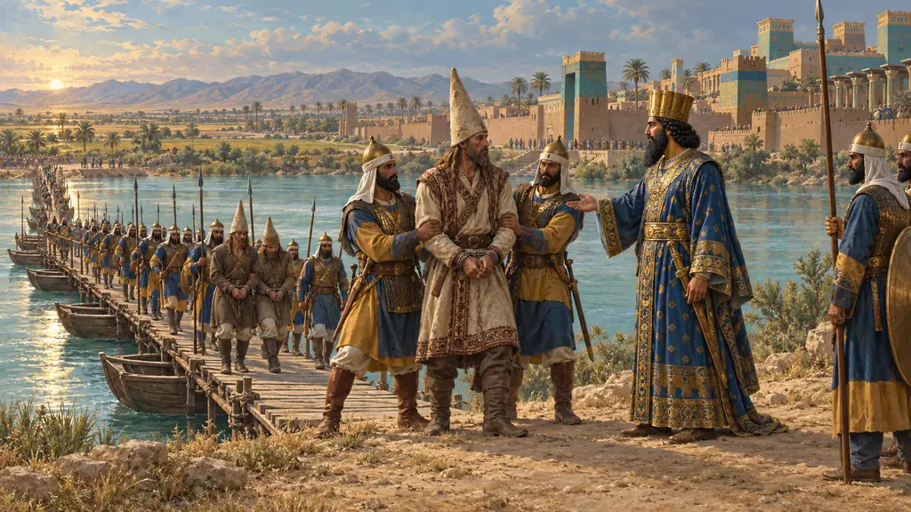
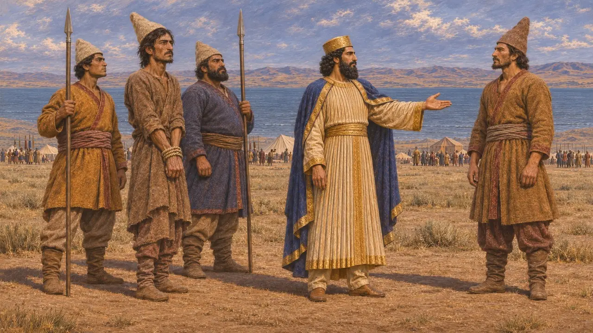
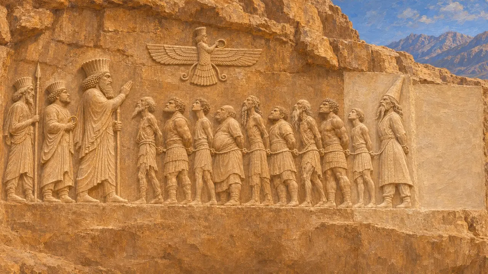
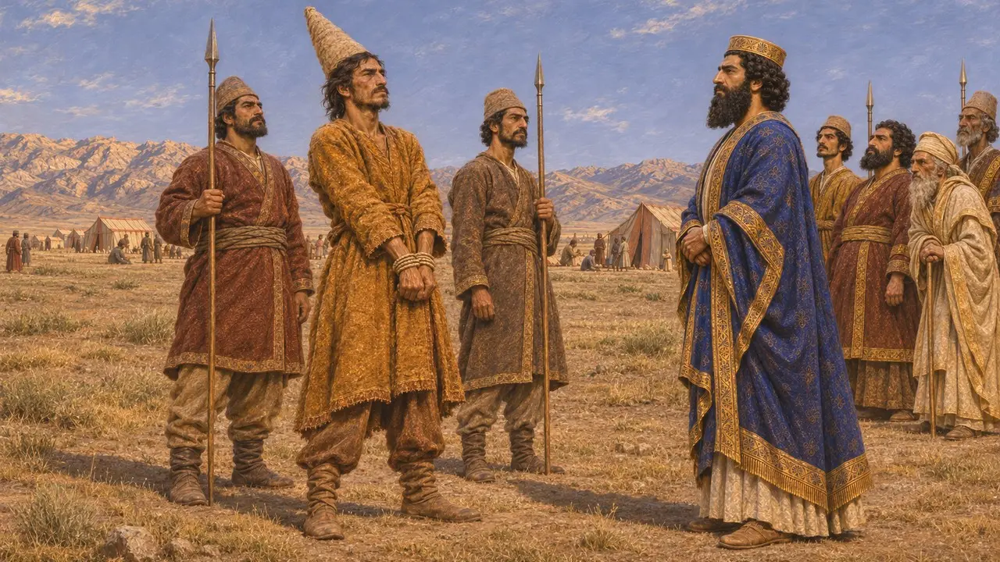
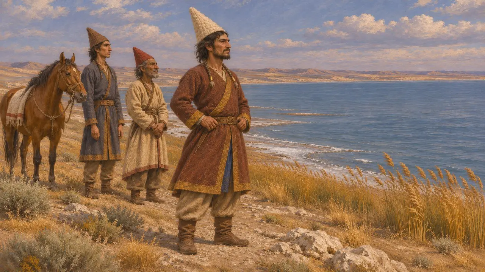
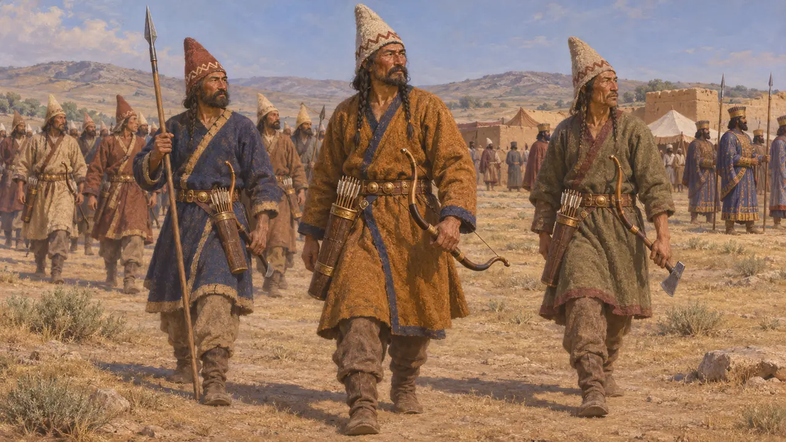

스쿤카
다리우스에게 붙잡혀 베히스툰 부조에 추가된 사카 족장. 아마도 기원전 520년 이후
스쿤카는 뾰족한 모자를 쓴 사카의 족장으로, 다리우스는 바다를 건넌 뒤 그를 붙잡았다고 말한다. 그는 베히스툰 부조에 새겨진 마지막 인물로, 최초 설계 이후에 추가되었다. 그의 이름을 언급하는 것은 다리우스 자신의 비문뿐이며, 그의 영토와 시기는 불확실하게 남아 있다.
게임에서: 스쿤카는 백과사전의 사건 항목, 주로 스쿤카 원정 항목에서만 언급되며, 고유한 게임 메커니즘은 없다.

다리우스의 말
당대 기록DB §74에서 다리우스는 뾰족한 모자를 쓴 사카족을 향해 진군하여 군대와 함께 바다를 건넜다고 말한다. 그는 그들을 크게 무찔렀다고 한다. 그들의 족장으로 이름이 올라 있는 스쿤카는 붙잡혀 그에게 끌려왔다. 이어 다리우스는 자신이 원하는 대로 다른 사람을 그들의 우두머리로 세웠다고 말한다.
DB §74

바위 위의 인물
당대 기록스쿤카는 다리우스 앞에 묶여 선 반란자들의 줄 맨 끝에, 높고 뾰족한 모자를 쓴 모습으로 서 있다. 그는 원래 설계에 포함되어 있지 않았다. 그를 넣기 위해 부조를 확장했고, V열에 덧붙은 비문은 나중에 새겨졌다. 따라서 이 기념물은 처음 조각된 뒤에 갱신되었다.
DB §74

후대의 원정
당대 기록베히스툰에 묶인 채 새겨진 다른 인물들은 기원전 522년과 521년에 다리우스에게 맞서 일어난 자들로, 처음 네 단에 그 이야기가 나온다. 스쿤카는 나중에 덧붙인 다섯째 단에 속하며, 이 단은 훨씬 뒤의 원정을 서술한다. 여기서 다리우스는 이 사카인들을 신의 없는 자들이라 부르고 그들이 아후라마즈다를 섬기지 않았다고 말하지만, 그들과의 전쟁은 즉위 첫해의 반란들과 구별하여 이야기한다.
DB §74

어느 사카인가, 어느 바다인가
분쟁 중다리우스의 왕실 비문에는 사카의 여러 집단이 언급되며, 뾰족모자 집단도 그중 하나이다. 이들이 어디에 살았는지, 다리우스가 건넌 바다가 어느 바다인지를 두고 역사가들의 의견은 갈린다. 제시된 답으로는 아랄해와 카스피해 지역 등이 있으며, 시기 또한 확정되지 않았다. 다만 이 원정은 첫 비문이 새겨진 지 1년 이상 지난 뒤였을 가능성이 크다.
P. Briant, From Cyrus to Alexander, 2002

그리스 저술가들과 사카
고대의 전승헤로도토스는 스쿤카의 이름을 한 번도 언급하지 않는다. 그는 사카인과 카스피인을 하나의 공물 구역으로 묶어 나열하고, 크세르크세스의 군대 가운데 아미르기아 사카인을 묘사한다. 따라서 스쿤카는 오직 페르시아 쪽 기록에서만 알려져 있으며, 그를 다룬 그리스 쪽 이야기는 없다.
Herodotus 3.93; Herodotus 7.64
출처
- DB §74
- Herodotus 3.93
- Herodotus 7.64
- P. Briant, From Cyrus to Alexander, 2002